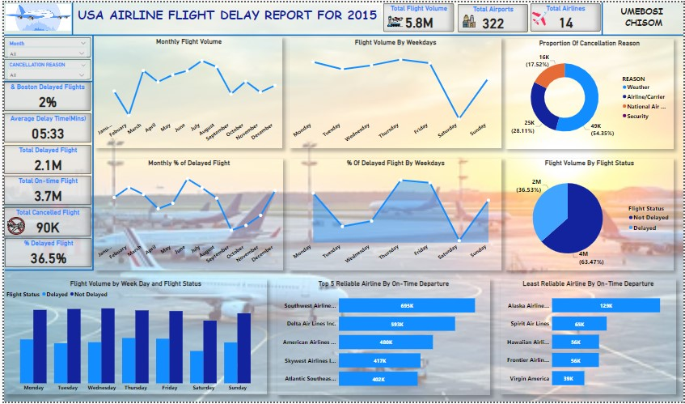
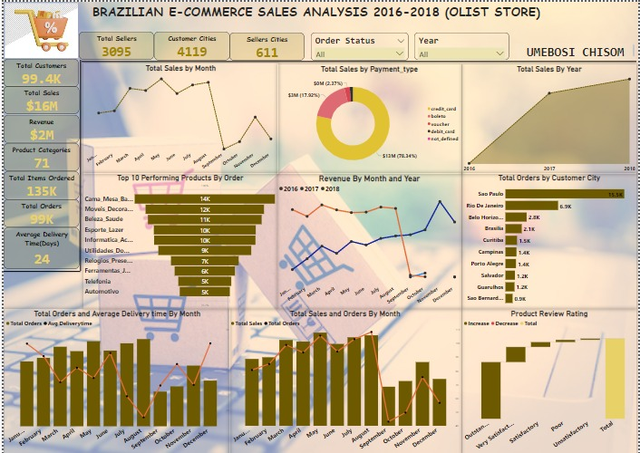
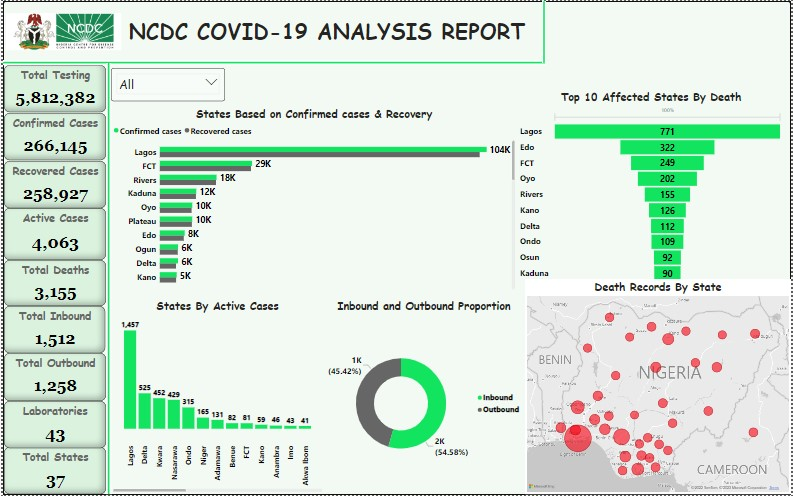
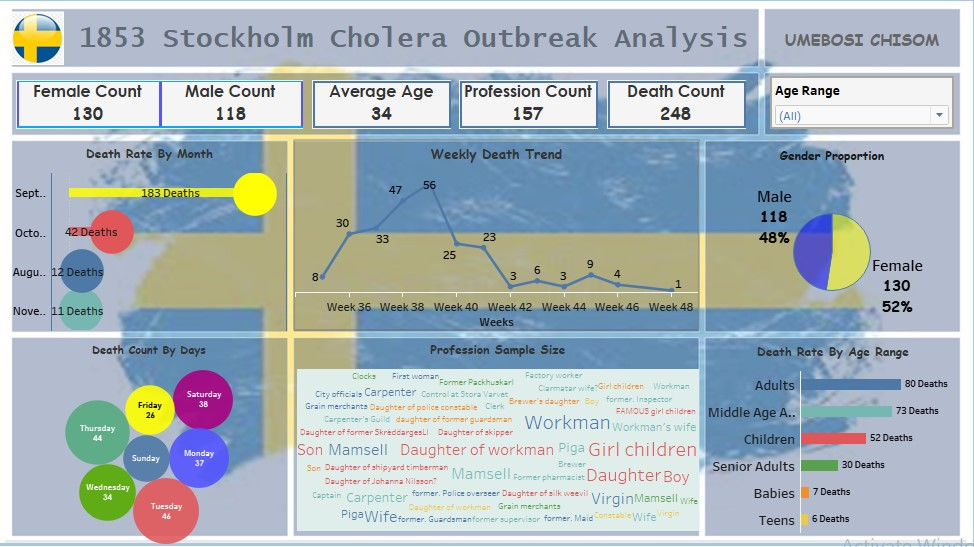
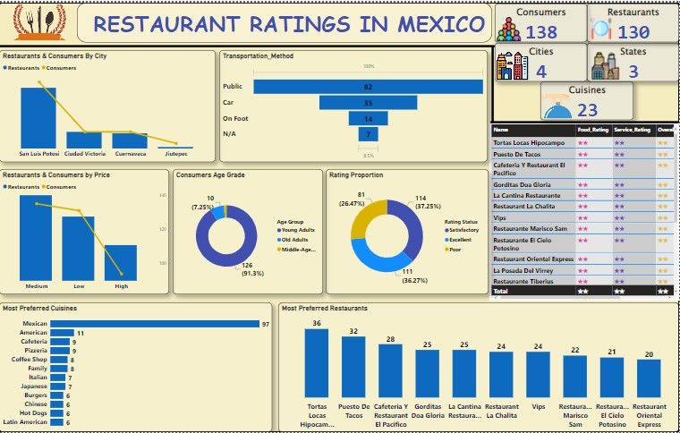

This is a project with records for 5,000,000+ commercial airline flights in 2015, compiled for the U.S. DOT
Air Travel Consumer Report. Each record represents a single flight, including the airline name, flight number, origin/destination airport and flight distance, as well as
scheduled/actual departure and arrival times.
Key insights derived are: Overall flight volume, Total cancelled and delayed flight volume, Flight status volume, Monthly and Daily flight volume, Monthly and Daily %delayed flights by Volume, Flight Status volume, Credible and non-credible airlnes, and many more.

This Project showcases the exploration of bitcoin trades and exchange for the time period of Jan 2012 to December 2021, with ceratin duration updates of OHLC (Open, High, Low, Close), Volume in BTC and indicated currency. As we all know that bitcoin is the longest running and most well known cryptocurrency, first released as open source in 2009 by the anonymous Satoshi Nakamoto. Bitcoin serves as a decentralized medium of digital exchange, with transactions verified and recorded in a public distributed ledger (the blockchain) without the need for a trusted record keeping authority or central intermediary.

This is a Brazilian eCommerce public dataset of orders made at Olist Store. The dataset has information of 100k orders from 2016 to 2018 made at multiple marketplaces in Brazil.Key insights derived are: Monthly and Yearly Overall sales,Monthly and Yearly Revenue generated, Sales By Payment Mode, Monthly Sales and Orders, Product review and rating , Monthly average delivery time for orders placed and so much more.

This project shows the stock prices of the 10 popular companies ( Apple, Amazon, Netflix, Microsoft, Google, Facebook, Tesla, Walmart, Uber and Zoom). Also the yearly stock volume and trend of each company as well as the stock's price(open, close, low and high) that has been amended to include any distributions/corporate actions that occurs before next day.

This project was analysed with an updated data as reported and accurate by NCDC(Nigeria Centre for disease and prevention control) as of 18TH December 2022. The data was scarpped from the website and the folowing insights were derived: Total number of confimred and recovered cases across the states, total number of deaths across all states, Geospatial map showing the death occurences across the country and many more.

This project showcases part of the research work on the history of Stockholm in the 19th century in the aspect of the cholera pandemic event. This large cholera outbreak occured in late August 1853 where about 3% of the population died within a couple of weeks and poor parts of the city where badly affected.

This project shows traffic to and from the Airport as a Percentage of the Traffic volume during the baseline period. The baseline period used for computing this metric is from 1st Feb to 15th March 2020.

This projects talks about the New York City Taxi and Limousine Commission (TLC) which collects data on every taxi trip in the city, including pickup and dropoff locations, fare amount, and other details. This data was made public and has led to the development of various data analysis and visualization, aimed at understanding the patterns and trends of taxi rides in the city, including peak hours, popular destinations, and more.

Restaurant ratings in Mexico project involves analyzing and visualizing data from various sources(real consumers), including additional information about each restaurant and their cuisines, patterns and trends of restaurant ratings(based on several factors, including the quality of food, the cleanliness of the restaurant, the service provided by staffs, and the ambiance of the establishment) across different regions, each consumer and their preferences, consumer and their transportation methods, age range of the consumers and many more.